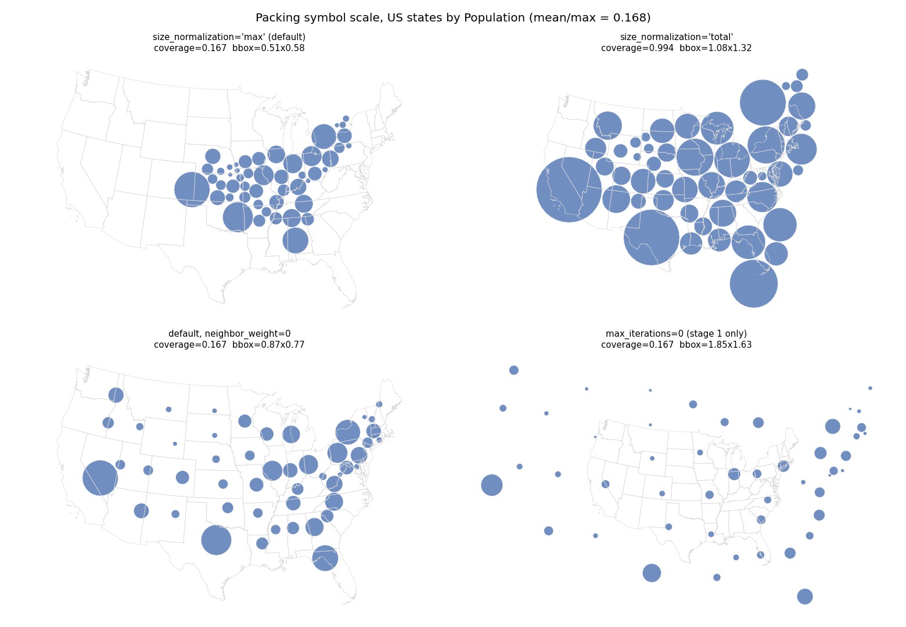

Investigation, no code change. Symbol coverage under the default size_normalization="max" is exactly mean(value)/max(value) of the sizing column — 0.168 for US states by Population. The neighbour tangency force then contracts the layout to the configuration where those small circles touch, which is about sqrt(coverage) of the map's linear size. Both effects are by design; neither is specific to packing.
Under size_normalization="max" the largest symbol is given an area equal to the mean geometry area, so with the default sqrt scale the total symbol area works out to total_geometry_area x mean(value) / max(value) exactly. US states by Population: mean/max = 0.1683, measured coverage 0.1672. Europe by pop_est: 0.1324 predicted, 0.1315 measured. Africa: 0.1275 and 0.1266. With a uniform sizing column the ratio is 1 and coverage is 0.994.
size_normalization="total" sets the total symbol area equal to the total geometry area instead: coverage 0.994 on every input.
The residual 0.6% is the rendered circle being a 32-gon.
The neighbour tangency force pulls adjacent symbols until they touch. With circles at 16.7% of the map's area, the touching configuration is about sqrt(0.167) = 0.41 of the map's linear size. Measured bounding box is 0.51 x 0.58 of the input, a little looser than 0.41 because circles cannot tile perfectly. Setting neighbor_weight=0 gives 0.87 x 0.77 and cuts median displacement from 0.165 to 0.045; compactness=0 and origin_weight=0 barely move either number, and removing origin attraction makes displacement worse, so it is a restoring force rather than a cause.
The contraction is radial, not directional: the symbol cluster's own centroid moves only 0.03 of the characteristic map length. The far-western states move most simply because they are furthest from the centre of contraction.

Four packings of US states by Population. Top left is the default. Top right is the same run with size_normalization="total". Bottom left removes the neighbour tangency force. Bottom right is stage 1 only (overlap resolution, before any contraction).